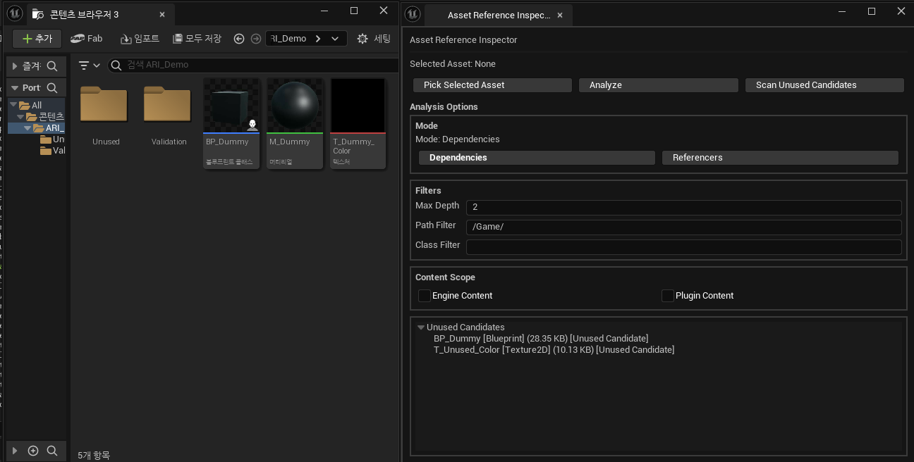

참조 관계 탐색·공유·순환 처리
선택 에셋의 Dependencies·Referencers를 조회합니다. 서로 다른 경로의 공유 에셋을 유지하고 같은 경로의 순환은 종료하도록 구성했습니다.
공유 경로 보존 · 순환 노드 표시 후 하위 탐색 중단
10월 추가 QA는 별도 Data Asset의 hard reference입니다. 당시 Blueprint·실제 프로젝트 전체 재실행을 뜻하지 않습니다.
에셋 참조 관계를 조회하고 미사용 후보를 탐색하며, 분석 결과를 CSV로 저장하는 에디터 플러그인입니다.
에셋 참조 관계를 조회하고 미사용 후보를 탐색하는 Unreal Engine 에디터 플러그인입니다.
에셋 선택 없이 미사용 후보 조회
개발 당시 사용 결과 보기포트폴리오 업데이트 ·

개발 범위와 우선순위를 정하고 기능 요구를 검토했습니다. 입력 오류를 발견해 조작별 로그를 제공하고, 탐색 범위 변경을 제안했습니다.
계획·지침 문서 작성, 코드 분석·구현·수정, 빌드와 자동 리뷰를 수행했습니다. 별도 환경에서 추가 QA와 자료 정리를 진행했습니다.
2026년 7월 개발 당시 확인과 10월 Codex 추가 QA를 구분합니다. 미사용 후보 표시는 삭제 안전성을 보장하지 않습니다.
선택 에셋의 Dependencies·Referencers를 조회합니다. 서로 다른 경로의 공유 에셋을 유지하고 같은 경로의 순환은 종료하도록 구성했습니다.
공유 경로 보존 · 순환 노드 표시 후 하위 탐색 중단
10월 추가 QA는 별도 Data Asset의 hard reference입니다. 당시 Blueprint·실제 프로젝트 전체 재실행을 뜻하지 않습니다.
에셋을 선택하지 않고 /Game 및 하위 폴더에서 후보를 찾고, 폴더·에셋 종류로 결과를 좁힙니다.
후보 목록 → 원본 에셋 위치 탐색 → 현재 결과 CSV 저장
후보 표시는 삭제 안전성을 보장하지 않습니다. 동적 로딩·Soft Reference 등의 사용 여부와 대규모 성능은 미검증입니다.
Enter 확정 직후 OnCleared 호출이 저장 경로를 덮어쓰는 원인을 확인했습니다.
후속 호출의 덮어쓰기를 막아 확정 경로 유지
사용자는 오류·로그 제공과 수정 후 Escape 확인, Codex는 분석·수정과 별도 Data Asset 환경의 추가 QA를 수행했습니다.
선택 에셋의 관계 안에서만 후보를 찾던 범위를 목적에 맞게 변경했습니다.
선택 에셋의 관계 목록 → /Game 및 하위 폴더 독립 탐색
개발 당시 조회·필터·원본 위치 이동을 확인했습니다. 동적 로딩·Soft Reference 등의 사용 여부와 대규모 성능은 미검증입니다.
프로젝트 한 편과 세 프로젝트 통합본을 구분해 제공합니다.
대표 사례, CSV 저장, AI 리뷰와 원자료를 확인합니다.
개발 당시 확인·추가 QA·미검증 범위를 구분합니다.
저장 결과의 분석 모드를 유지하도록 보완한 사례입니다.
소스 코드와 README, 개발·학습 문서를 확인합니다.